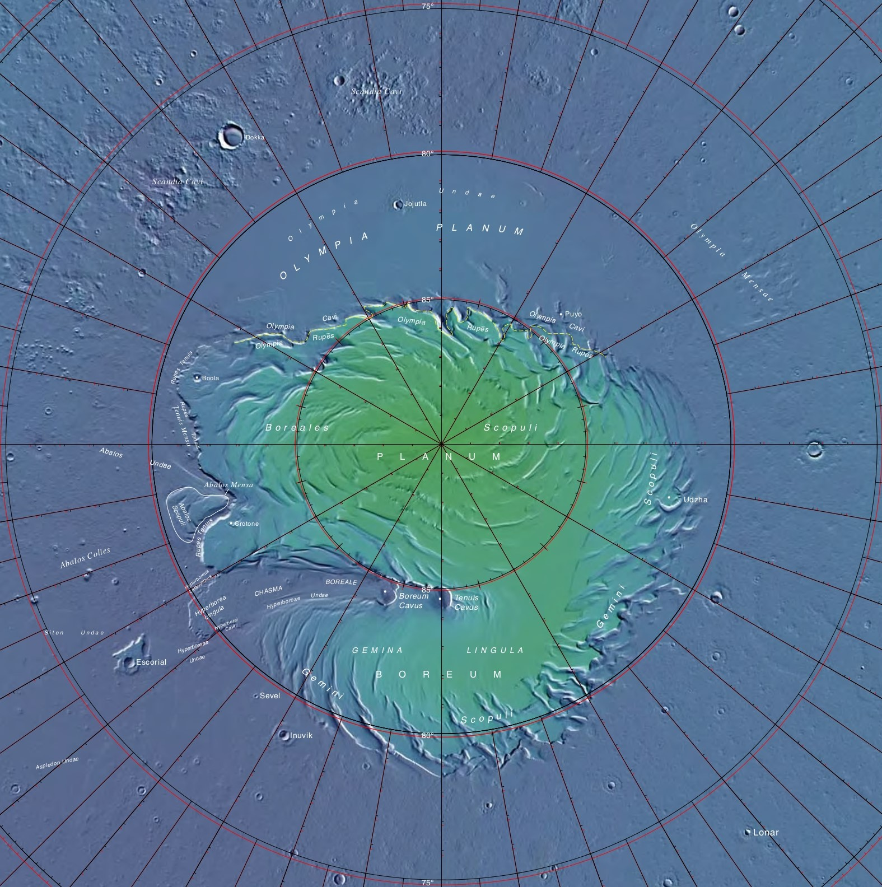

Home
About
Research
Radar Data Sample
CV
Software

I study the north polar layered deposits of Mars, a region at the North Pole of the red planet that is thought to grow as a function of the obliquity (i.e. the tilt) of the planet's orbit around the Sun.